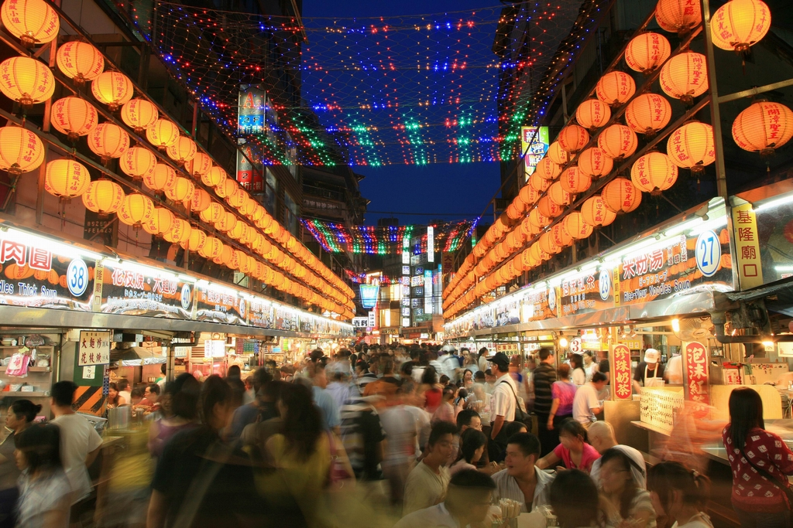
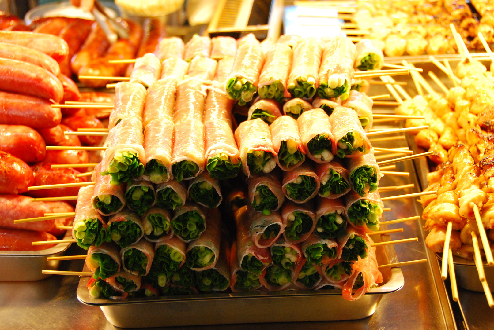

Explore Taiwan
Night Market is a must!

Night markets are open nightly and offer a variety of fresh Taiwanese snacks, clothing, or fun accessories. Some markets are busy normal city streets during the day that transform to bustling markets in the evening. Others are established locations that are closed during the day but open in the evening. Night markets usually start up at dusk and continue until about midnight. Taiwanese night markets are a Taiwanese experience that is not to be missed.

Make sure to grab some of these delicious late night munchies on your visit to a nearby night market. A handful of asparagus wrapped tightly in layers of juicy, fatty bacon, these yummy rolls are the perfect balance between delicous fatty foods and healthy veggies.